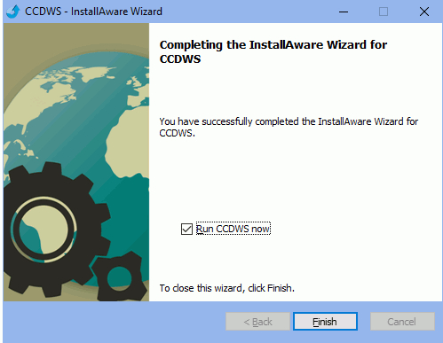

CCDWS Service
For Canada the CCDWS service can be used to submit claims to Insurance Carriers.
Open Dental is a CCDWS certified software. The CCDWS service should only be installed for users sending claims through Claimstream and non-dentist providers sending claims through ITRANS 2.0.
- Using a Windows administrator account on the server, download CCDWS from https://ccdws.hardersoft.com/.
- Click ccdws-latest-win-install.exe to download it.
- Open the downloaded file location, right-click the CCDWS installer and select Run as administrator.
- If Microsoft Defender blocks the installation, click More Info, then Run Anyway.
- Click Next.

- Check I accept the terms of the license agreement, then click Next.

- Click Next.

- Keep the install path at c:\ccd, then click Next.

- Ensure Complete is checked, then click Next.

- Enter the Service User Account and password. For most users, this can be any user account. For users with CDA Digital IDs (i.e., provider certificates), this is the user that the certificates are installed to. Then click Next.
- Leave the REST Listener port entered as 9000, then click Next.

- Click Next.

- When prompted to view the CCDWS configuration file, click No.

- Ensure Run CCDWS now is checked, then click Finish.
 - Share the CCD folder.
- For Claimstream users: Create and send a test claim.
For ITRANS users: Contact Open Dental Support for an updated CCDWS.ini configuration file and Telus vendor certificate. - Restart the CCDWS service for changes to take affect.

Note: Domain, user, and password must be entered correctly for the service to install. If not using a domain, enter the server name instead (e.g., server\user or .\user).
Troubleshooting
If the prompt in Step 12 does not appear, there may be an issue with the credentials. Re-run the installer as administrator, and when prompted for credentials (step 9), leave them blank and click Next. When the installation is complete, find CCDWS in Services and go to Properties. Re-enter the credentials under This Account in the Log On tab.